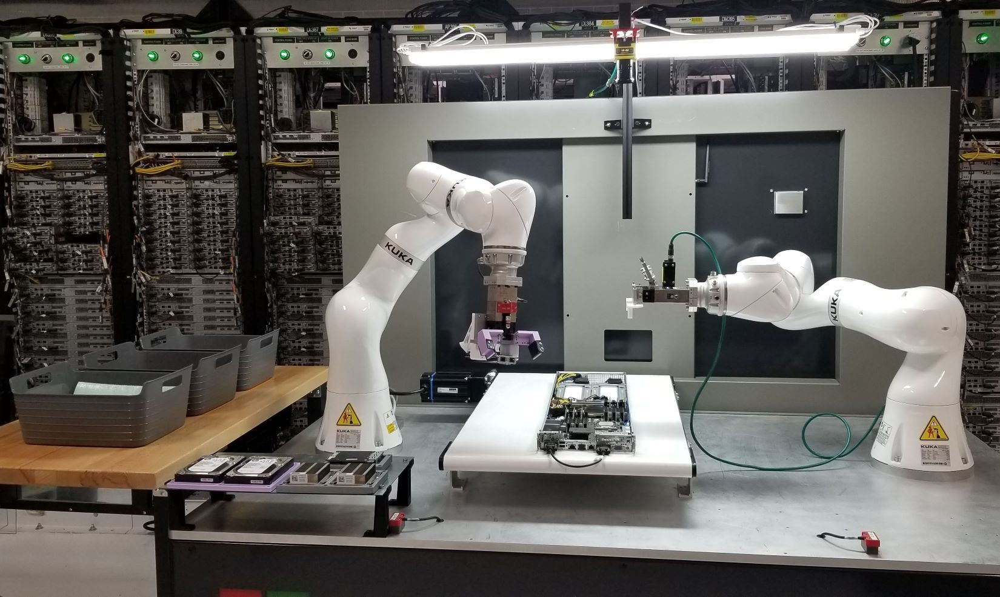
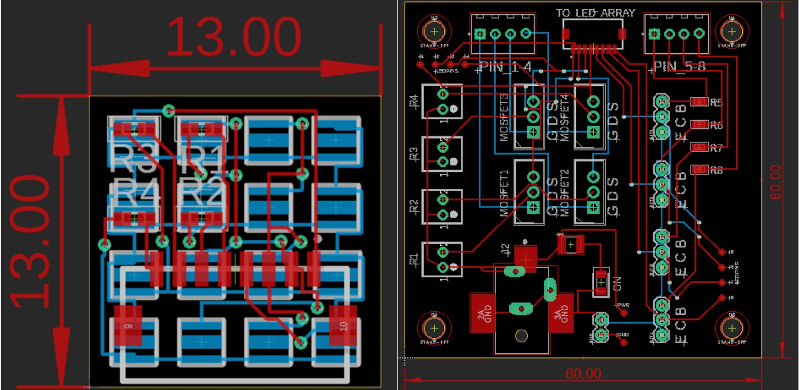

Current Projects
DietSkan - Combining Machine Learning Food Classification with Volume Estimation
Current dietary logging solutions place a large amount of burden on the users, especially for people with diabetes. While some solutions exist on the market, we hope to combine a novel volume estimation technique using structured light combined with a machine learning solution to classify images. In doing so, we are striving to alleviate the burden on users while providing accurate macronutrient information in a healthcare context.
At SEAL, I’m helping out as a Project Manager for the team and working on the technical development as well. To make this happen, I’m currently learning Android app development (from Udacity!)and prototyping our model on Google Colab using PyTorch and this dataset. I’m also conducting interviews with other research facilities, defining the system requirements and specifications, and helping out with writing the manuscript!
Current Grad Coursework
- Embedded and Real Time Systems
- Machine Learning for Cyber Security
Previous Projects
ENGINE Capstone with Microsoft – Automated Server Workcell for Datacenters
Manually repairing servers is labor intensive and costly for large server farms. By implementing a workcell that can replace parts on a server with minimal human intervention, my capstone team and I produced an autonomous solution that can help to reduce costs and man hours spent on menial tasks. Using two KUKA 7-axis arms and custom end effectors on a server work cell, we integrated machine vision with Cognex cameras to handle arbitrary server poses on a conveyor belt.

I worked as the team lead for the project where I worked on integrating the machine vision, Arduino communications with the conveyor belt, as well as the project management. Check out our poster here.
High Power LED Array with Adapter Board for Large Scale Optogenetics Interface for Non-Human Primates

Optogenetics is a novel neuromodulation method that essentially uses light to activate (or inhibit) neurons by using optogenetic actuators to allow the neurons to be activated by light. In my time at Dr. Azadeh Yazdan’s Neural Engineering and Rehabilitation Design lab, I designed a high-powered LED array alongside an adapter board to drive the LED array through the Grapevine Nomad neural interface processor. The LED array is only 13mm by 13mm in size and was designed to fit snugly into the housing mounted on the monkey’s skull.
Axon Internship – Building Test Firmware to Measure Recoil, and Redesigning a Self-Test for the High Voltage Module
In my 10 weeks in Scottsdale, Arizona, I was exposed to a huge variety of fields including manufacturing, testing and validation, as well as medical testing for Taser exposure. However, most of my time was spent in the Conductive Electrical Weaponry division as a Hardware Engineering Intern where I primarily worked on firmware. My first project was building a test firmware build to utilize an on-board accelerometer on the control board of the Taser 7 to investigate recoil patterns for different firearm primers. After I finished that project, I moved onto redesigning the self-test procedure for the high voltage module to provide more reliable validation in both manufacturing and user use-case scenarios.
I also got exposed to the Taser 7 myself! If you’re wondering why I did it, it was because I was too curious on what it would feel like, and I also felt that if I ever ended working at Axon I should understand the impact of what I would be contributing to.
Intro to Computer Architecture – Implementing a 64-bit 5-stage pipelined ARM CPU on an FPGA
In my senior year at UW, I took EE 469 – Intro to Computer Architecture and to this day it remains my favorite class at UW. The labs were a continuous development of a 64 bit 5-stage pipelined ARM CPU as we continued to learn about the different constituents of the CPU. The tasks culminated to a functioning ARM CPU done entirely on SystemVerilog, with pipelining features such as branch acceleration and forwarding, with all gates limited to a maximum of 4 inputs (larger gates were built upon). Everything was done with Quartus and ModelSIM.
Previous Grad Coursework
- The Self Driving Car: Introduction to AI for Mobile Robots
- Deep Learning for Big Visual Data